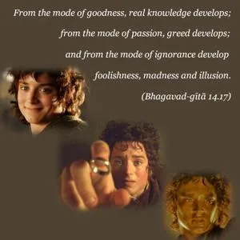
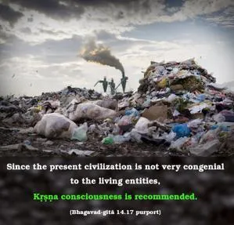
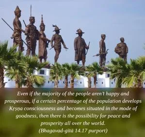
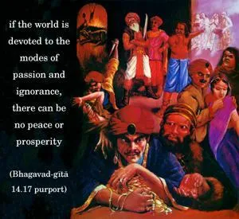

From the mode of goodness, real knowledge develops; from the mode of passion, greed develops; and from the mode of ignorance develop foolishness, madness and illusion.




Since the present civilization is not very congenial to the living entities, Kṛṣṇa consciousness is recommended. Through Kṛṣṇa consciousness, society will develop the mode of goodness. When the mode of goodness is developed, people will see things as they are. In the mode of ignorance, people are just like animals and cannot see things clearly. In the mode of ignorance, for example, they do not see that by killing one animal they are taking the chance of being killed by the same animal in the next life. Because people have no education in actual knowledge, they become irresponsible. To stop this irresponsibility, education for developing the mode of goodness of the people in general must be there. When they are actually educated in the mode of goodness, they will become sober, in full knowledge of things as they are. Then people will be happy and prosperous. Even if the majority of the people aren’t happy and prosperous, if a certain percentage of the population develops Kṛṣṇa consciousness and becomes situated in the mode of goodness, then there is the possibility for peace and prosperity all over the world. Otherwise, if the world is devoted to the modes of passion and ignorance, there can be no peace or prosperity. In the mode of passion, people become greedy, and their hankering for sense enjoyment has no limit. One can see that even if one has enough money and adequate arrangements for sense gratification, there is neither happiness nor peace of mind. That is not possible, because one is situated in the mode of passion. If one wants happiness at all, his money will not help him; he has to elevate himself to the mode of goodness by practicing Kṛṣṇa consciousness. When one is engaged in the mode of passion, not only is he mentally unhappy, but his profession and occupation are also very troublesome. He has to devise so many plans and schemes to acquire enough money to maintain his status quo. This is all miserable. In the mode of ignorance, people become mad. Being distressed by their circumstances, they take shelter of intoxication, and thus they sink further into ignorance. Their future in life is very dark.